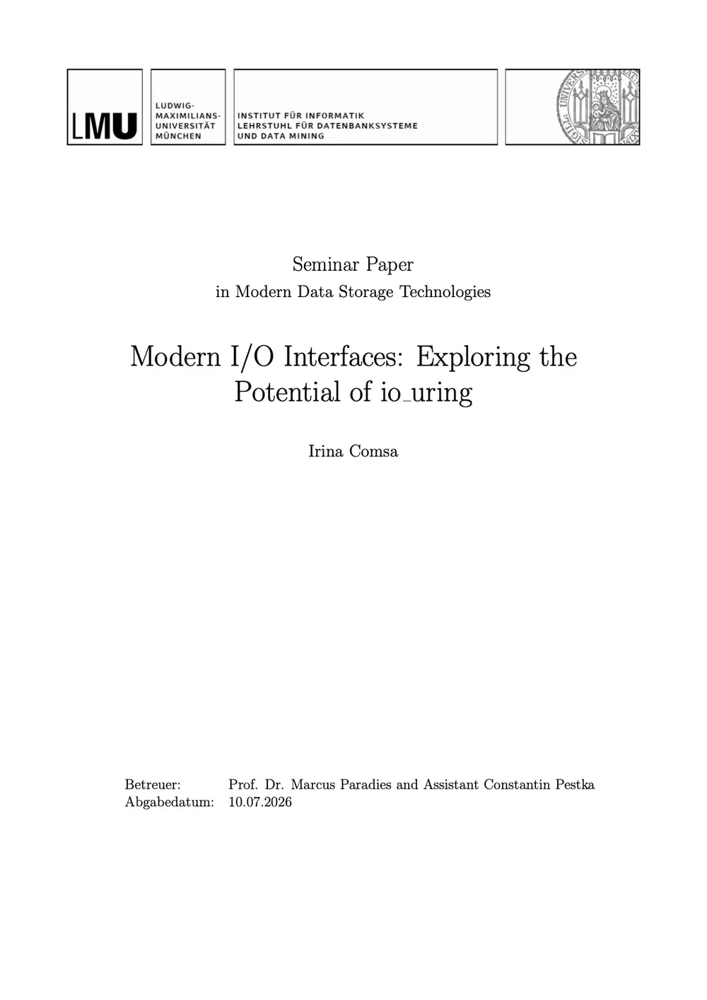
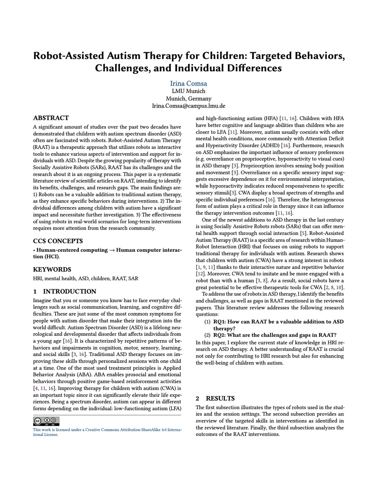

Modern I/O Interfaces: Exploring the Potential of io_uring
Compares io_uring with libaio and SPDK across four recent studies, and works out when it can saturate modern NVMe SSDs and when it falls short.
Papers I've written during my studies at LMU Munich.

Compares io_uring with libaio and SPDK across four recent studies, and works out when it can saturate modern NVMe SSDs and when it falls short.

Reviews studies on social robots in autism therapy: which behaviours they help children practise, and why individual differences and the lack of long-term, real-world studies are the field's biggest open gaps.